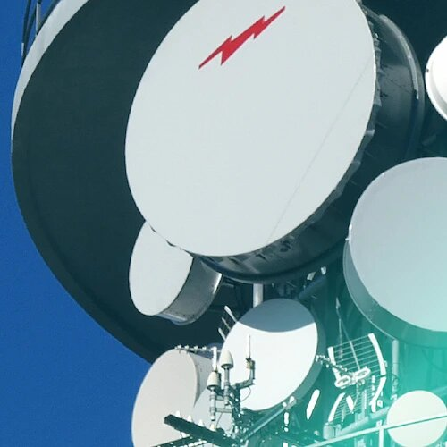

Telefonía móvil
Te ayudamos a lanzar tu propio Operador Móvil Virtual (OMV): de la marca blanca al canal de distribución, listo para vender.
Consultoría para operadores de telecomunicaciones
20 años lanzando OMV, redes de FTTH e infraestructura de telecomunicaciones, con más de 800 operadores locales a nuestras espaldas.
Servicios
De la idea a la operación diaria, en tres fases: lanzar tu proyecto, conectar tu red y operar con un equipo formado. Esto es lo que hacemos en cada una.
Te ayudamos a lanzar tu propio Operador Móvil Virtual (OMV): de la marca blanca al canal de distribución, listo para vender.
Tu hoja de ruta antes de invertir: planes estratégicos, técnicos y comerciales para operadores locales y empresas de telecomunicaciones.
Vende fibra sin desplegar red propia: servicio mayorista de bitstream FTTH, pensado para operadores locales y revendedores.
Diseño, monitoreo y respaldo de la red: la infraestructura troncal completa para que tu operador no se quede nunca sin servicio.
Te acompañamos en todo el proceso, tanto si compras una red como si vendes la tuya.
Formamos a tu equipo de ventas, gestores de cuentas y atención al cliente para que vendan con soltura desde el primer día.
El resto de piezas que un operador necesita, todas bajo el mismo techo:

Trayectoria
Han sido parte de hitos como el primer Operador Móvil Virtual completo de España (Cablemóvil), Ion Mobile y Avatel Móvil.
Nosotras
Llevamos trabajando juntas en el mercado de las telecomunicaciones más de 20 años, siendo parte de empresas líderes del sector.
Directora Estrategia y Desarrollo
Natural de Villarrobledo (Albacete), licenciada en Gestión Comercial y Marketing. Ha desarrollado toda su carrera en tecnología y telecomunicaciones, siendo pionera en servicios para operadores locales.
Se formó en la Escuela Superior ESISC Business & Marketing School. Fue de las primeras en llevar este tipo de servicios al operador local, y ha acompañado el crecimiento de ese mercado desde dentro de cada una de las empresas de referencia del sector en las que ha trabajado.
Airtel-Vodafone · Grupo Avaya · Xtra Telecom-Grupo MasMóvil · Aire Networks · Avatel
LinkedIn de Margarita Díaz Cano (se abre en una pestaña nueva)
Directora Operaciones y Ventas
Natural de Benicarló (Castellón), licenciada en Filología Inglesa. Comenzó en World Telecom y se incorporó al proyecto de servicios para operadores locales junto a Margarita.
Se formó en la Universidad de Valencia. Empezó en World Telecom, una empresa inglesa pionera en soluciones de telefonía, y al volver a España se sumó al proyecto de operador local que lideraba Margarita. Desde entonces ha desarrollado, gestionado y comercializado buena parte del catálogo de productos que hoy forma este negocio.
World Telecom · Xtra Telecom-Grupo MasMóvil · Aire Networks · Avatel
LinkedIn de Marta Segarra Grau (se abre en una pestaña nueva)Valores
Actuamos de manera transparente y auténtica en todos los ámbitos. La clave del éxito es ser claras, sinceras y accesibles.
Nuestros 20 años desarrollando proyectos de telecomunicaciones nos permiten conocer el mercado y ofrecer resultados de calidad.
Dedicamos toda nuestra energía a lo que hacemos. Nos esforzamos, aprendemos y nos superamos para dar lo mejor de nosotras.
Somos conscientes de la importancia que tiene la responsabilidad de hacer un trabajo bien hecho.
Contacto
Escríbenos si quieres hablar de un OMV, una red que dar de alta o vender, o cualquiera de los servicios de arriba. Respondemos siempre desde el mismo correo.
Escríbenos
Cuéntanos qué necesitas y te contestamos directamente por correo, sin formularios ni intermediarios.
Enviar un correo